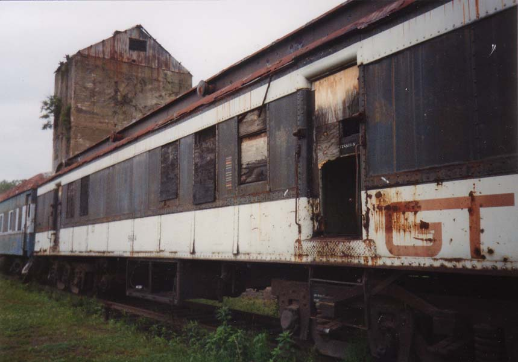
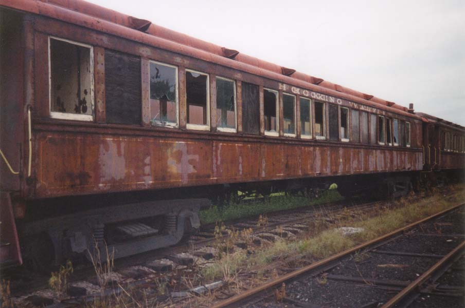
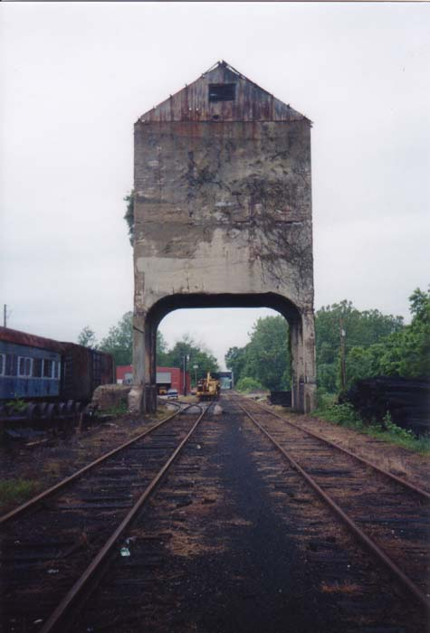
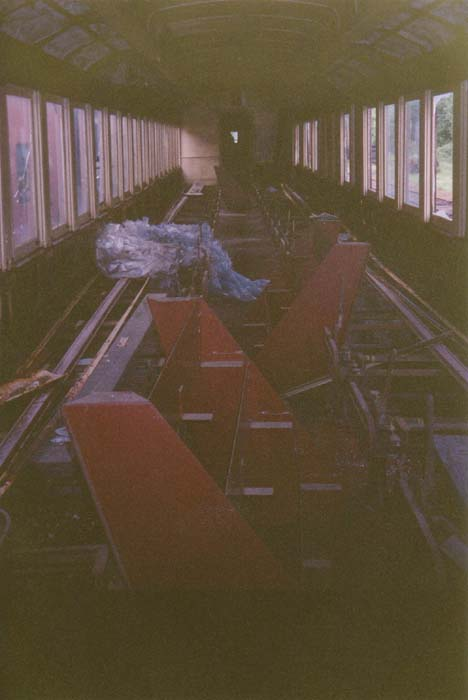
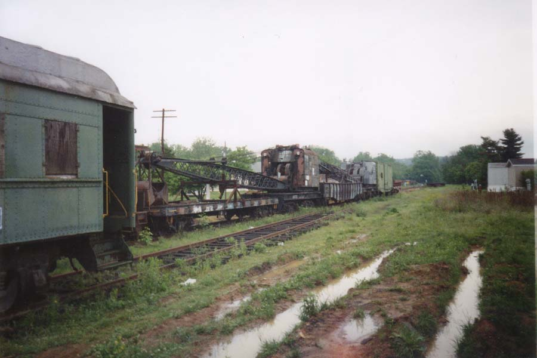
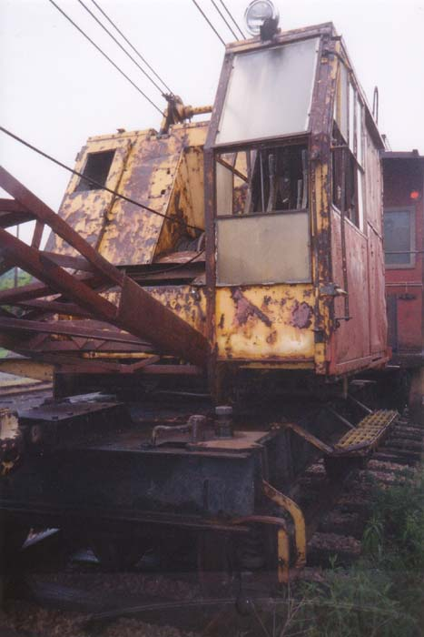
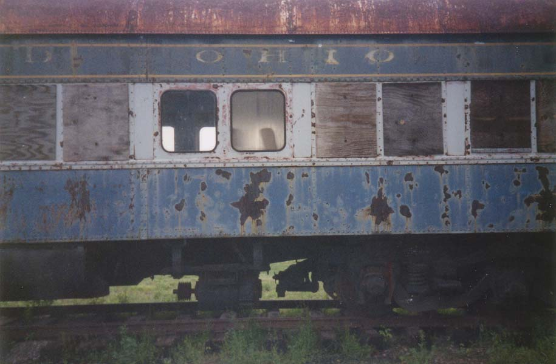

Behind an apartment complex in Nelsonville is an isolated little railroad siding stocked with passenger train cars. The windows, though thick and shatter-resistant, have mostly been broken, and the local kids have managed to kick through the wood over the doors. The trainyard is an oddly fascinating and depressing place, full of relics from the era of passenger train travel. Today a tourist train runs through the Hocking Valley out of Nelsonville, but these cars have been permanently retired.

I stumbled upon this one early morning in June with my ex-girlfriend, after we'd been up all night. She stayed in the car while I ran around and took pictures. There are about ten trains on three tracks. The main track runs underneath a big concrete structure which was used for loading open cars with several tons of coal at a time.

The seats have been removed from the cars and replaced with miscellaneous junk, as you can tell below.

There's also some construction-type equipment on flatbed cars, including an old crane of some sort. Whether this stuff is retired or just stored here I don't know.


After hearing from an informed source I can now say that the trains here were orignially owned by the Erie, Norfolk & Western, and Chesapeake & Ohio before coming to the Hocking Valley and being retired. It turns out that they will soon be restored, as well, so this sight might not be around much longer.

You can check the Nelsonville Trainyards out anytime you're in Nelsonville by going south from Route 33. The driveway into the apartment complex they're located behind is the most potholed thing I've ever driven on, though, so make sure your shocks are in good working order.
If you'd like to learn more about the Hocking Valley Scenic Railroad, click here.
Back
forgottenohio@yahoo.com